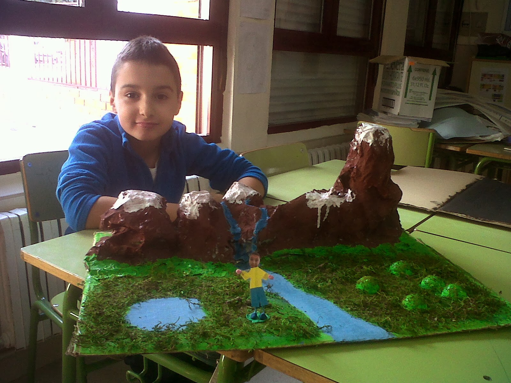

Si te interesa conocer sobre mi pueblo, haz clic aquí.
Si te interesa conocer sobre sobre los canales de tv, haz clic aquí.
Si te interesa conocer sobre markdown haz clic aquí.
Si te interesa conocer sobre java haz clic aquí.
¡Me presento, soy Miguel.

Soy un chico de 19 años que estudia en Zaragoza.
Un poco más sobre mí
Actualmente estudio un grado de desarrollo de aplicaciones web, no me encanta demasiado la programación pero la forma en la que se trabaja me llama bastante la atención. Me considero un chico espabilado aunq un poco perezoso y esto se puede reflejar bastante en mis estudios. Me gusta hacer deporte y pasar el tiempo con mis amigos y con mi novia, también si pudiera tener dinero para gastarme en algo sería en viajar y comer bien, algo bastante usual pero yo creo que no hay mejor respuesta. Podría seguir alargando esto mucho mas pero son las 20:31 y no me va a dar tiempo a entregarlo. Saludos Manuel.
Mis aficiones
- Ir al gimnasio.
- Ver series.
- Quedar con mis amigos
- Jugar al voleibol( me apunte la semana pasada)
- Hacer planes con mi novia